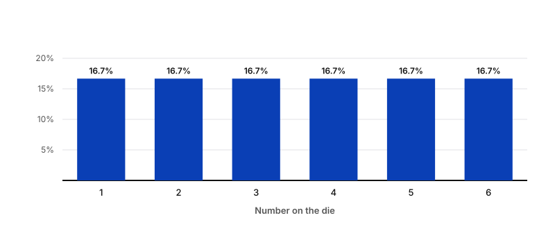
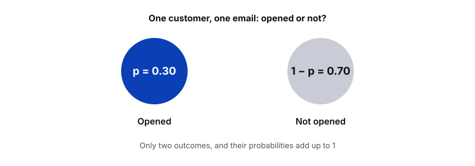
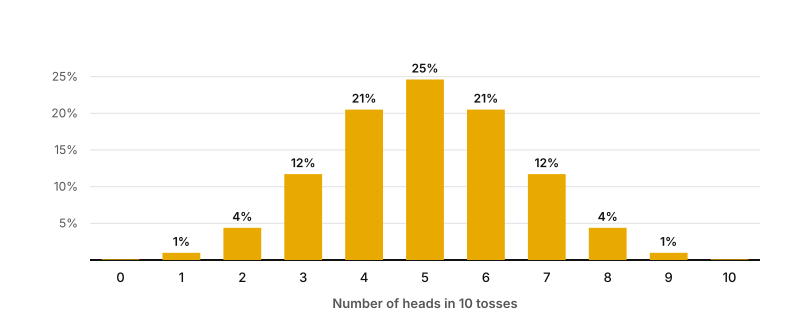
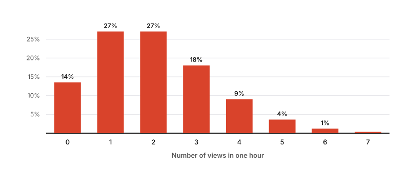
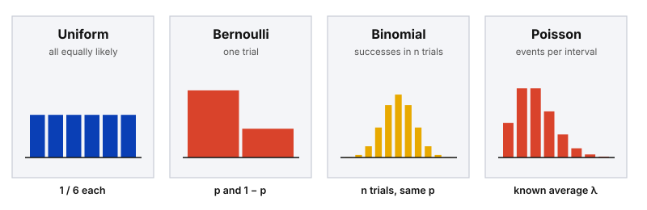

Probability
Four Common Discrete Distributions
In Random Variables & Probability Distributions we saw that a discrete variable takes countable values and that its PMF lists the probability of each one. In practice you rarely build a PMF from scratch. Many real situations follow a small set of well-known patterns, and recognising the pattern tells you which model to use. This post covers four of them: uniform, Bernoulli, binomial and Poisson.
Uniform distribution
The uniform distribution describes a situation where all outcomes are equally likely. Rolling a die has six outcomes (1 to 6), and each has the same probability: 1 out of 6, or about 16.7%.
You can show a discrete distribution as a histogram: the possible values of the random variable go on the x-axis, and the probability of each value goes on the y-axis. For a uniform distribution every bar has the same height.

Where it is used
Data professionals often use the uniform distribution as a building block for more complex methods, such as Monte Carlo simulations. In a business setting, think of randomly assigning customers to one of several test groups: each group is equally likely. The uniform distribution also exists for continuous variables, not only discrete ones.
Bernoulli distribution
The Bernoulli distribution models a single trial with only two possible outcomes: success or failure. The two outcomes cannot happen at the same time. If the probability of success is p, the probability of failure is 1 − p.
A classic example is a single coin toss. In business data, it is a single customer who either opens a marketing email or does not. If 30% of customers open it, then p = 0.30 for success and 1 − p = 0.70 for failure.

Success is just a label
"Success" and "failure" are labels chosen for convenience. For a coin toss you could call heads the success or tails the success, depending on what your analysis needs. In a fraud model, the "success" is usually the event you are trying to detect, such as a fraudulent transaction.
Binomial distribution
The binomial distribution is the Bernoulli distribution repeated. It models the number of successes in a fixed number of independent trials. The only difference is that Bernoulli covers one trial, while the binomial covers n trials. The process behind it is called a binomial experiment, which has four attributes:
- Repeated trials. The experiment consists of a fixed number of trials.
- Two outcomes. Each trial has only two possible outcomes: success or failure.
- Same probability. The probability of success is the same for every trial.
- Independence. Each trial is independent, so one result does not affect any other.
Tossing a coin 10 times in a row is a binomial experiment: there are 10 trials, each toss gives heads or tails, the probability of heads is 50% every time, and one toss does not influence the next. The histogram shows the number of heads on the x-axis and the probability of each result on the y-axis. The most likely result is 5 heads, at about 24.6%, and the bars fall away on both sides.

Data professionals use the binomial distribution to model, for example, the probability that:
- a new medication causes side effects,
- a credit card transaction is fraudulent,
- a stock price rises in value,
- a customer who received an offer makes a purchase.
In machine learning, the binomial idea is also behind classification: an algorithm can be trained to decide whether a digital image shows a specific animal, like a cat or a dog, or not.
Poisson distribution
The Poisson distribution models the number of events that occur in a fixed period of time. It can also describe events in a fixed space, such as a distance, an area or a volume, but here we focus on time. A Poisson experiment has three attributes:
- Countable. The number of events can be counted.
- Known average. The mean number of events per time period is known.
- Independence. Each event is independent of the others.
Imagine you publish content on a website that averages two views per hour. You want to know how likely it is to get a certain number of views in a given hour. This fits a Poisson experiment: views can be counted, the average of two per hour is known, and one person viewing the site does not affect whether another one does.
On the histogram, the x-axis shows the number of views per hour and the y-axis shows the probability. The tallest bars are 1 and 2 views, at about 27% each. Getting no views at all in an hour has a probability of about 14%.

Data professionals use the Poisson distribution to model the number of:
- calls per hour in a customer service call center,
- customers per day in a shop,
- thunderstorms per month in a city,
- financial transactions per second at a bank.
Which distribution should I use?
A quick way to choose is to ask what you are counting.
| Distribution | What it models | Business example |
|---|---|---|
| Uniform | All outcomes equally likely | Randomly assigning a customer to 1 of 4 test groups |
| Bernoulli | One trial, two outcomes | One customer opens the email or not |
| Binomial | Number of successes in n independent trials | How many of 100 customers open the email |
| Poisson | Number of events in a fixed interval, with a known average | Support calls per hour |

Binomial vs Poisson
Both count events, but the binomial has a fixed number of trials and a success probability (10 tosses, 50% each). The Poisson has no fixed number of trials, only an average rate per time period (2 views per hour).
Key takeaway
Identifying the distribution of your data is a key step in any analysis, and it helps you make informed predictions about future outcomes. Discrete distributions like the binomial and the Poisson are the ones you will meet most often as a data professional. Knowing the distribution of your data also helps you choose the statistical method or machine learning model that works best for your analysis.